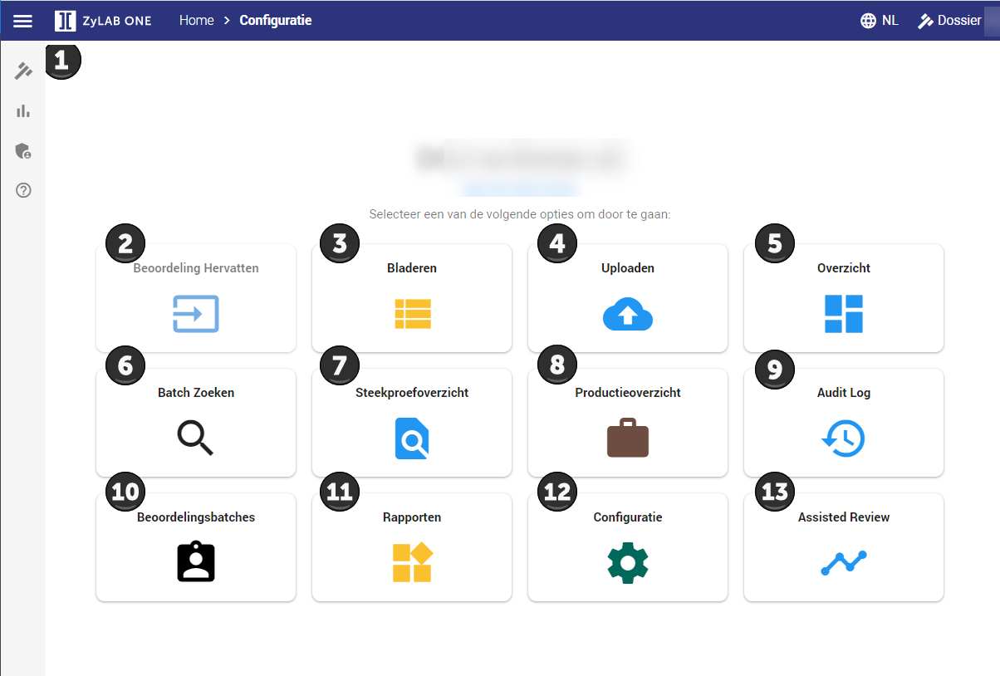
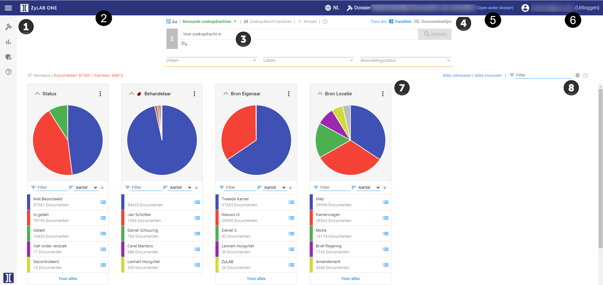
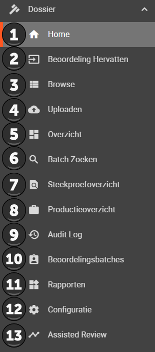
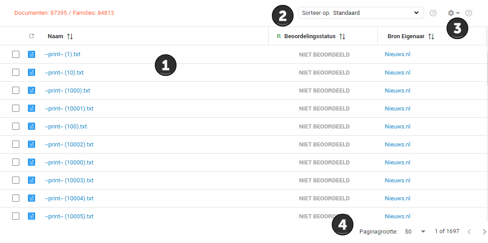
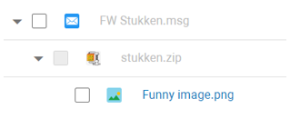
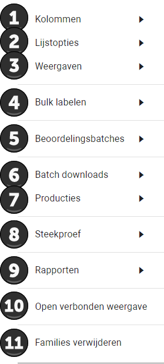

Het Woo dashboard leidt u naar alle verschillende functionaliteiten van de ZyLAB ONE software, in Uitleg 1 worden de knoppen toegelicht.
In Uitleg 2 volgt het documenten dashboard. In Uitleg 3 de menubalk. In Uitleg 4 de documentenlijst. In Uitleg 5 de documentenlijst opties.
Indien u bekend bent met de knoppen slaat u dit topic over.

Dit is de menubalk. Meer informatie vindt u hieronder in Uitleg 3.
Als u op de knop Beoordeling Hervatten klikt, komt u terecht bij het document waar u bij de vorige sessie gestopt bent.
Als u op de knop Bladeren klikt, komt u terecht bij het Documenten Dashboard. Meer informatie vindt u hieronder in uitleg 2.
Als u op de knop Upload klikt, komt u in het Upload Dashboard. Meer informatie hierover vindt u in het topic Verzamelen van informatie.
Als u op de knop Overzicht klikt, komt u op de overzichtspagina. Deze pagina wordt niet gebruikt bij het behandelen van Woo-verzoeken.
Als u op de knop Batch Zoeken klikt, komt u terecht in een omgeving waar u meerdere zoekopdrachten tegelijk kunt uitvoeren. Meer informatie hierover vindt u in het topic Zoekmogelijkheden.
Als u op de knop Steekproefoverzicht klikt, komt u in het steekproef overzicht. Meer informatie hierover vindt u in het topic Een steekproef uitvoeren.
Als u op de knop Productieoverzicht klikt, komt u in de productie omgeving terecht. Meer informatie hierover vindt u in het topic Documenten opleveren.
Als u op de knop Audit Log klikt, komt u in het audit overzicht. hier kunt u alle gelogde gebeurtenissen bekijken.
Als u op de knop Beoordelingsbatches kunt u alle workloads (review batches) bekijken.
Als u op de knop Rapporten klikt komt u terecht in een omgeving waar u tekst verrijking kan toepassen en verschilleden rapportages kunt bekijken. Dit wordt vrijwel niet bij de Woo toegepast.
Als u op de knop Configuration klikt, komt u in het Configuratie Dashboard terecht.
Als u op de knop Assisted Review klikt, komt u in het Assisted Review Dashboard. Dit wordt niet gebruikt bij het beantwoorden van Woo verzoeken.

Het Documenten dashboard geeft een overzicht van alle bestanden die in ZyLAB ONE door u, uw collega's of externe partijen zijn geüpload.
Dit is de menubalk, hiermee kunt u door de verschillende functionaliteiten van ZyLAB ONE navigeren. Meer informatie hierover vindt u in uitleg 3 hieronder.
Dit is de broodkruimelnavigatie zoals u die kent van Windows verkenner. U kunt hier de Home knope ten allen tijden gebruiken om terug te navigeren naar het Woo Dashboard.
Dit is de zoekbalk. Hiermee kunt u op basis van trefwoorden en zoekopdrachten zoeken door alle bestanden. Meer over deze zoekfuncties vindt u in het topic Zoekmogelijkheden.
Hier ziet u in welke zaak u zich bevindt. Klik op Open ander dossier om een andere zaak te openen.
Hier kunt u wisselen tussen het aanzicht met cirkeldiagrammen en het aanzicht van de documentenlijst. De documentenlijst is vergelijkbaar met Windows verkenner. Meer informatie hierover vindt u in uitleg 4 hieronder.
Hier ziet u met welk account u bent ingelogd en kunt u uitloggen door op Uitloggen te klikken.
Dit zijn de facets (cirkeldiagrammen). Deze cirkeldiagrammen visualiseren de documenten op verschillende soorten kenmerken. Bijvoorbeeld wanneer er 3 mensen bestanden hebben geüpload, dan is er een cirkeldiagram die laat zien welk percentage van alle documenten van welke uploader is. Door middel van het klikken op de verschillende stukken van de cirkeldiagrammen kunt u browsen door alle bestanden. Dit is vergelijkbaar met een werkschijf met mappen. De broodkruimelnavigatie houdt bij waar u zich precies bevindt. In het topic Personaliseren wordt uitgelegd hoe u de cirkeldiagrammen het beste kunt personaliseren.
Hier kunt u uw aanzicht van de cirkeldiagrammen mee personaliseren, meer informatie hierover vindt u in het topic Personaliseren.

De knoppen van de menubalk worden hier uitgelegd:
Met de Home knop komt u weer terecht bij het Woo Dashboard.
Met de Beoordeling Hervatten knop kunt u uw sessie hervatten op de plek waar u het laatst was gebleven bij het beoordelen van de documenten.
Met de Browse knop komt u terecht in het documenten dashboard. Meer informatie vindt u hierboven in Uitleg 2.
Met de Uploaden knop komt u in het Upload Dashboard. Meer informatie hierover vindt u in het topic Verzamelen van data.
Met de Overzicht knop komt u terecht op een overzicht pagina. Deze pagina wordt niet gebruikt bij het behandelen van Woo verzoeken.
Met de Batch Zoeken knop komt u terecht in een omgeving waar u meerdere zoekopdrachten tegelijk kunt uitvoeren. Meer informtie hierover vindt u in het topic Zoekmogelijkheden.
Met de Steekproefoverzicht knop komt u terecht in het steekproef overzicht. Meer informatie hierover vindt u in het topic Een steekproef uitvoeren.
Met de Productieoverzicht knop komt u in de productie omgeving terecht. Meer informatie hierover vindt u in het topic Documenten opleveren.
Met de Audit Log knop kunt u alle gelogde gebeurtenissen bekijken.
Met de Beoordelingsbatches knop kunt u alle aangemaakte workloads bekijken.
Met de Rapporten knop komt u terecht in een omgeving waar u tekst verrijking kan toepassen. Dit wordt vrijwel niet bij de Woo toegepast.
Met de Configuratie knop komt u in het Configuratie Dashboard terecht. De instellingen die u hier kunt veranderen worden op verschillende plekken in logische volgorde in deze handleiding behandeld. Meer informatie over de mogelijkheden in het topic Configuratie Dashboard.
Met de Assisted Review knop komt u in het Assisted Review Dashboard. Dit wordt niet gebruikt bij het beantwoorden van Woo-verzoeken.

Wanneer u wisselt tussen het aanzicht met de cirkeldiagrammen naar het aanzicht met de documentenlijst, komt uw scherm er als volgt uit te zien:
Hier ziet u de documenten en bijbehorende informatie op basis van uw instellingen. U kunt deze weergave Personaliseren.
Hier kunt u de documenten sorteren op verschillende mogelijkheden, dit is ook mogelijk door op de kolomkoppen te klikken.
Hier kunt u verschillende instellingen en functionaliteiten aan- of toepassen, meer informatie hierover vindt u in Uitleg 5 hieronder.
Hier kunt u invoeren hoeveel bestanden u per pagina wilt zien. U kunt hier ook zien hoeveel pagina's er zijn en op welke pagina u zich momenteel bevindt.

In de bovenstaande afbeelding ziet u de de verhouding tussen de betreffende documenten terug. In de documentenlijst is het mogelijk om gelijk de verhouding terug te zien. In dit geval heeft er aan het mailtje genaamd FW Stukken.msg een zip file gezeten als bijlage genaamd stukken.zip. In deze zip file zit een bestand genaamd Funny image.png. Dit is te zien door de hiërarchische onderverdeling van de bestanden.
Daarnaast zijn de bestanden FW stukken.msg en stukken.zip grijs in plaats van blauw zoals Funny image.png dat komt doordat er een zoekvraag is toegepast, waar alleen Funny image.png is gevonden als resultaat. Echter, laat de documentenlijst alsnog de verhouding zien tussen de gerelateerde documenten, omdat deze mogelijk ook relevant zijn doordat het plaatje is gevonden door middel van de zoekvraag. Deze instelling kan aangepast worden, zie hiervoor het topic Personaliseren.

Hier kunt u de kolommen die u ziet in het documenten dashboard aanpassen. Zie het topic Personaliseren.
Hier kunt instellen of u verbanden tussen gerelateerde documenten wilt zien. Zie het topic Personaliseren.
Hier kunt u wisselen tussen verschillende opgeslagen gepersonaliseerde aanzichten. Zie het topic Personaliseren.
Hier kunt u labels aan meerdere documenten tegelijk toevoegen. Meer informatie hierover vindt u in het topic Bulk labelen.
Hier kunt u de documenten onderverdelen in verschillende workloads. Dit kan handig zijn als er meerdere medewerkers zijn, zodat iedereen een eigen set aan documenten heeft. Meer informatie hierover in het topic Aanvullend zoeken.
Hier kunt u geselecteerde bestanden downloaden. Indien documenten middels de Batch Downloads functie worden gedownload worden geplaatste aflakkingen op het document permanent ingebrand in het gedownloade document.
Hier kunt u de bestanden klaar maken voor de oplevering of de opvraag van een zienswijze. Meer informatie hierover vindt u in het topic Documenten opleveren.
Hier kunt u een steekproef aanmaken. Meer informatie hierover vindt u in het topic Een steekproef uitvoeren.
Hier kunt u de inventarislijst van de documenten produceren. Meer informatie hierover vindt u in het topic Specificeren Woo-verzoek met behulp van een inventarislijst en het topic Documenten opleveren.
Hier wordt u doorgeleid naar de bewerkingspagina van documenten, zodat u met twee schermen tegelijk kunt werken. Meer informatie over de bewerkingspagina vindt u in het topic Documenten beoordelen.
Hier kunt u de verbanden tussen documenten permanent verwijderen. Dit wordt niet gebruikt bij de behandeling van Woo-verzoeken en wordt daarom niet in deze use case behandeld.